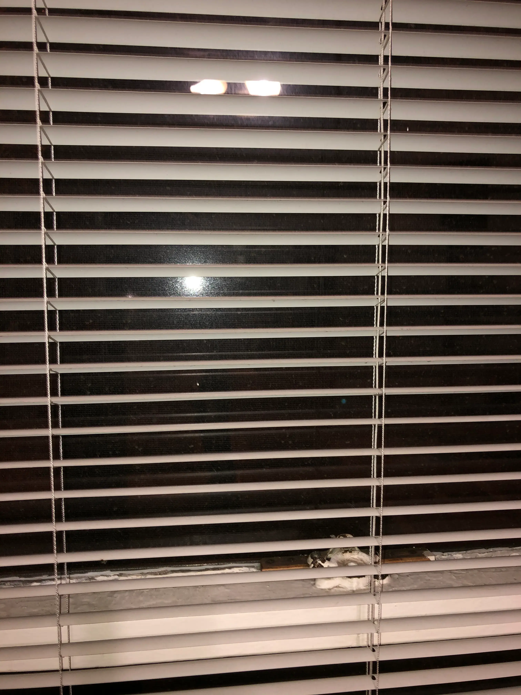

there are so many things about me
you will never know
the dark drive i used to take to work
when i was the only one on the road
things i never talked about
or even cared to write down
yet thought about from time to time
isn't that interesting?
i wonder what they're all for
